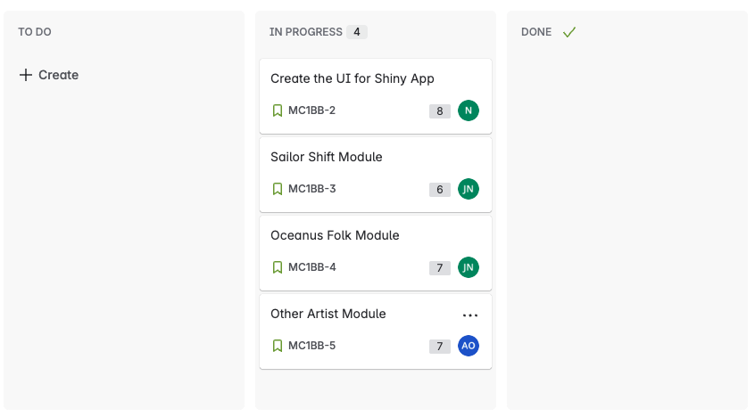
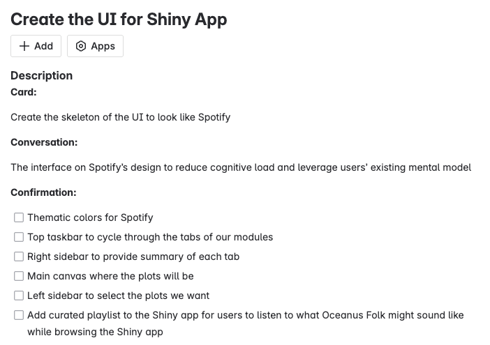
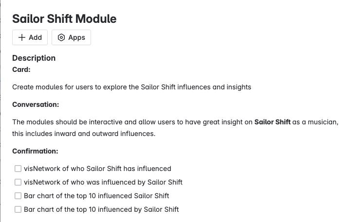
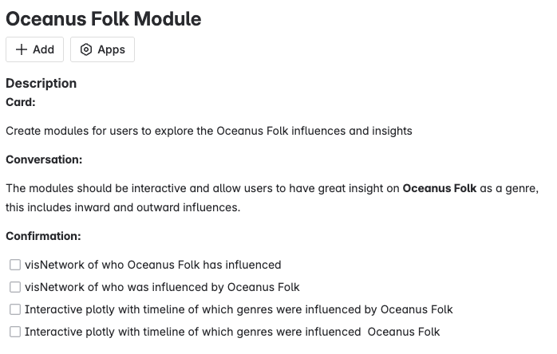
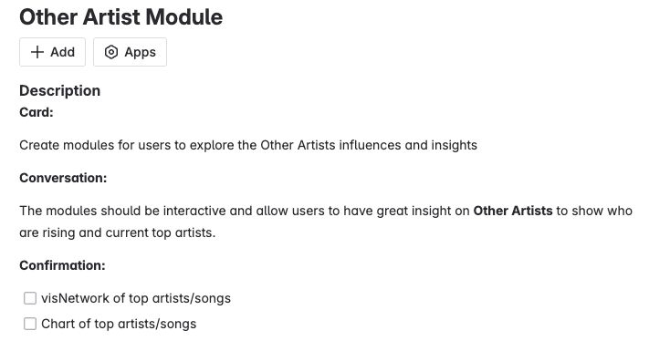

Meeting Minutes 1
Group 11: Meeting Minutes 1
Date: 21 June 2025
Time: 1700hrs to 1830hrs
In Attendance: Andre Ong, Ng Jin Yao, Nor Hendra Bin Abdul Rahman
Opening:
The meeting was called to order at 1700hrs by the group in SMU.
Agenda Items
- Module selection
- UI Design
- Agile Practices and Project Timeline
Agenda Item 1: Module Selection
Prior to the first meeting, the team had an informal discussion on 17 January 2025 and agreed to come together and finalise what modules we are working on. We discussed our ideas from Take-home Exercise 3.
Jin Yao shared that we can have a module called ‘Influence Network Explorer’ where the central node can be change to any artist. The goal of this module is to answer question 1 and question 3 influences of Sailor Shift and other artistes.
Andre has also highlighted what he would be exploring for question 3 by having a top artist visNetwork and accompany it with a bar chart to show the top artists/songs.
Hendra also shared that for Oceanus Folk, we would only need “inward” and “outward” influences to answer question 2. This should be accompanied with an interactive plotly to which genres has the most influence count. A timeline should be added to see how the influences has affected throughout the years.
To conclude this agenda, we will be splitting it to 3 modules to answer each question, and they are ‘Sailor Shift’, ‘Oceanus Folk’, and ‘Other Artists’. However, we remain open to adjustments as new insights emerge.
Agenda Item 2: UI Design
After exploring several layout options, the team unanimously endorsed Hendra’s Spotify-inspired design from Take-home Exercise 3. His clean, familiar interface will not only showcase our visualizations but also set the perfect stage for an immersive audio experience.
To bring the fictitious genre of Oceanus Folk to life, Hendra proposed curating a sample playlist that captures its imagined soundscape. By embedding audio clips directly into our Shiny App, users will be able to toggle between tracks as they explore influence networks and timelines—deepening their connection to the music and the story behind it.
Building on that idea, Jin Yao and Andre each contributed a hand-picked selection of songs whose textures and melodies evoke Oceanus Folk’s ethos. Together, their contributions will form a dynamic, exploratory playlist—so listeners can not only see how Oceanus Folk fits into the broader musical landscape but also hear its spirit firsthand.
The team unanimously decided on the project topic of “Global Terrorism” after considering all the different proposed ideas, as the “Global Terrorism” dataset has a comprehensive list of variables that can be worked on to explore the different visualisation techniques and methods learnt from the course. In addition, it also fulfilled the requirement of using open-source government data to build a web-enabled interactive visual analytics application.
Agenda Item 3: Agile Practices and Project Timeline
During the session we agreed on a streamlined workflow to keep our Shiny App development both transparent and resilient:
Centralized Codebase: All code now lives in a single GitHub repository https://github.com/norhendra/mc1_backseatbois - so everyone works from the same source of truth.
Lightweight SOP
Whenever anyone pushes new commits, they’ll send a quick notification in our chat so the rest of the team can pull the latest changes immediately.
Andre recommended maintaining local backups of stable code branches, enabling us to roll back easily if something breaks.
Jin Yao stressed the importance of clear, descriptive commit messages that spell out exactly what was added, removed, or refactored.
Sprint-Based Task Management
Hendra proposed and we all agreed to treat our two-week window as a formal sprint in Jira. We’ve since:
Created a Jira board.
Generated tickets that align with our module selection and UI design.
Assigned each of us to specific tasks.
Adopted the “3 C’s” framework—Card, Conversation, Confirmation—to track every story from planning through completion.
By combining a centralized repo, a clear notification process, and a sprint mindset in Jira, we’ll ensure smooth collaboration, rapid iteration, and full visibility into our progress.Follow-up on Agenda Item 3: Sprint Setup on JIRA
https://nhendra.atlassian.net/jira/software/projects/MC1BB/boards/2

For Create UI for Shiny App:

For Sailor Shift Module

For Oceanus Folk Moduke

For Other Artists Module

Any Other Matters/Follow-up Action
WIth no other matters, the meeting ended at 1830hrs. We will follow-up again some time in mid-week when we see some progress in JIRA or when notified.